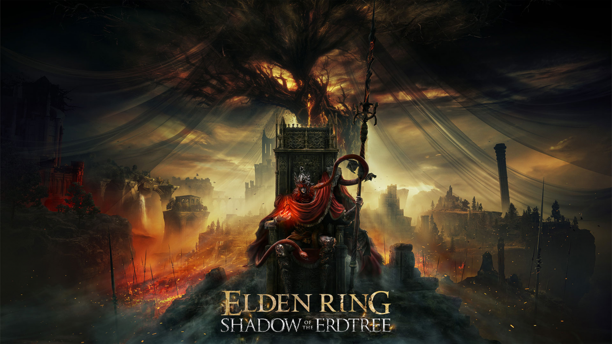

Sua DLC: shadow of the erdtree
Os chefes da expansão são espetaculares, com novos golpes e estratégias que os jogadores precisam aprender. As masmorras estão mais incríveis do que nunca, com uma quantidade impressionante de novas opções de combate e quests secundárias que adicionam histórias inéditas e recompensas valiosas.
A progressão em Shadow of the Erdtree é outra área em que a FromSoftware brilhou. Itens como os fragmentos da Umbrárvore, espalhados pelo mundo, forçam os jogadores a explorar cada centímetro do mapa em busca de upgrades valiosos. Esses fragmentos aumentam o poder de ataque e a defesa, mas apenas no Reino das Sombras, criando um ciclo de exploração e recompensa que mantém os jogadores engajados.
A DLC de Elden Ring introduz mais de cem novas armas, cada uma oferecendo uma experiência única. Os frascos de perfumes, katanas, espadas grandes e lâminas reversas são apenas algumas das adições que diversificam ainda mais as possibilidades de combate.